Política de privacidad de BOOMERANG
Integrantes: Delgado Ramiro, Cruz Bruno
Docente: Jesús Cabrera
Materia: Seguridad Informática
Carrera: Tecnicatura Superior en Desarrollo de Software 2do Año
Año: 2024
¿Qué es boomerang?
BOOMERANG es una red social centrada en la creación y compartición de videos cortos. Donde los usuarios pueden grabar contenido de hasta 10 minutos, por lo general la duración más destacada entre los usuarios son videos de 15 a 60 segundos, en los mismos se puede agregar música, efectos, filtros y textos.
Esta aplicación funciona con un algoritmo donde destacan los videos con los que más interactúan los usuarios, teniendo en cuenta reacciones, comentarios y compartidos. La plataforma ofrece efectos, filtros y sonidos(como música o audios de otros usuarios) que los creadores pueden usar para personalizar su contenido.
Los usuarios pueden interactuar con otros a través de “me gustas”, comentarios, compartidos y participar en colaboraciones como el dueto (donde los usuarios pueden interactuar con el contenido de otro en pantalla partida). La aplicación tiene en cuenta estos detalles para personalizar el contenido que aparece en el feed principal conocido como (Para ti) mostrándole a cada usuario videos relacionados con sus intereses.
BOOMERANG es conocido por ser el lugar donde nacen muchas tendencias virales especialmente en música, danza y memes. Los usuarios a menudo participan en desafíos virales que implican seguir coreografías o realizar ciertas tareas dentro de un formato común
Indice
Página 4…….. Introducción.
Página 5…….. Objetivos y análisis.
Página 6…….. Información que usted proporciona.
Página 7…….. Información que recopilamos automáticamente.
Página 8…….. Cómo utilizamos su información.
Página 9…….. Otros (obligaciones y derechos legales).
Página 10…….. Nuestras bases legales y cómo tratamos su información.
Página 11…….. Diagrama de contexto.
Página 12…….. Diagrama de Flujo de Datos.
Página 13…….. Caso de Uso.
Página 14…….. Ciclo de Vida.
Página 15 a 32 …….. Interfaz de Usuario.
Introducción
En la presente política de privacidad aplicada a BOOMERANG respetamos y valoramos la privacidad de nuestros usuarios. Esta política de privacidad describe cómo recopilamos, usamos, almacenamos, compartimos y protegemos la información personal que proporcionan al usar nuestra aplicación. Al acceder o usar BOOMERANG aceptas las prácticas descritas en esta política.
Los responsables del tratamiento de datos:
Toda información proveniente de los usuarios (nuevos o ya existentes) se almacenan de forma segura, responsable y cuidando la integridad de los mismos en BOOMERANG technology incorporation. Como así también controla todo el contenido que suben los usuarios, bloqueando aquellos que sean maliciosos, dañinos y que tengan contenido explicito para menores de edad, logrando asi ser una plataforma confiada y segura para todas las edades.
BOOMERANG se compromete a tratar tus datos personales de manera transparente, segura y conforme a las leyes aplicables en materia de protección de datos.
Para nosotros los datos de los usuarios son muy importantes, por eso recogemos cuidadosamente cada uno de ellos para que usted no tenga problemas cuando requiera de ellos.
Por eso mismo nuestro deber es proteger y guardar la información personal de cada uno de nuestros usuarios contra accesos no autorizados, pérdida o uso indebido.
También nosotros actuamos de manera responsable protegiendo los derechos de los usuarios y evitando las sanciones legales para que los usuarios tengan la confianza y fiabilidad de nuestra aplicación a la hora de brindarnos su información personal.
Objetivos
BOOMERANG incentiva a la creación de contenido donde los usuarios pueden realizar retos entre ellos, logrando una interacción más dinámica.
La plataforma BOOMERANG fomenta la creación de contenido, creatividad, el entretenimiento y la interacción social, a través de una experiencia visualmente atractiva. A lo largo de la evolución de la plataforma se ha enfocado en varios objetivos.
Creación de contenido viral: permite que cualquier usuario pueda crear contenido sin importar la cantidad de seguidores que tiene el mismo, y que se haga viral, gracias al algoritmo que prioriza la interacción y la popularidad que este pueda alcanzar.
Fomentar la creatividad: La plataforma ofrece herramientas fáciles de usar como efectos visuales, música, filtros y edición de vídeo, permitiendo que el usuario pueda ser creativo con respecto a su contenido.
Interacción social: BOOMERANG está diseñado para ser altamente interactivo, permitiendo a los usuarios comentar, compartir, dar "me gusta" y comentar otros vídeos, lo que crea un sentido de comunidad.
Entretenimiento: A través de sus videos cortos y dinámicos, BOOMERANG se ha establecido como una plataforma de entretenimiento donde los usuarios pueden disfrutar de contenido humorístico, educativo, inspirador, de moda, entre otros.
Marketing y monetización: BOOMERANG también se ha convertido en una herramienta importante para marcas, creadores de contenido e influencers, quienes pueden usarla para promover productos, servicios o incluso monetizar su contenido mediante colaboraciones o el programa de creadores de la plataforma.
Análisis
Recopilamos los datos para ofrecer una mejor experiencia en nuestra plataforma con el objetivo de brindarle un contenido más personalizado acorde a lo que los usuarios desean.}
Nuestros métodos de recopilación de datos son mediante formularios donde el usuario podrá colocar sus datos personales como correo electrónico y generar una contraseña y así poder tener una cuenta donde pueda ver, guardar, publicar videos sin ningún problema.
Usted al aceptar nuestra política de privacidad somos consciente de que está de acuerdo con todos nuestros términos y condiciones. Por eso le recomendamos leer a continuación atentamente todas nuestras informaciones detalladas.
Información que usted proporciona
INFORMACIÓN DEL PERFIL: Recopilamos la información que los usuarios nos proporcionan al crear una cuenta, como su fecha de nacimiento, nombre de usuario, dirección de correo electrónico o número de teléfono y contraseña. Con opción de foto de perfil o una breve biografía.
CONTENIDO DEL USUARIO: Recopilamos el contenido que usted crea o pública en la plataforma, como fotografías, videos, grabaciones de audio, transmisiones en directo, comentarios, hashtags, e información sobre cómo, cuándo, dónde y quién creo el contenido. Aunque no sea un usuario de la plataforma, la información sobre usted puede aparecer en los contenido creados y publicados por los usuarios en la plataforma. Recopilamos el contenido del usuario a través de la precarga en el momento de la creación, independientemente de si usted decide guardar o cargar el contenido del usuario (por ejemplo, como para recomendar música en función de un video). Además recopilamos su ubicación para mostrarle videos relacionados a la misma.
MENSAJES DIRECTOS: Si desea ponerse en contacto con otras personas mediante mensajes directos, recopilamos el contenido del mensaje (como la hora del envío, lectura del mensaje, así como los participantes en la comunicación). Recopilamos la información que usted haga con los comerciantes que le vendan productos. Lo hacemos para bloquear el spam, detectar delitos y proteger a los usuarios
Sus contactos: En el caso que decida sincronizar sus contactos, recopilamos información de la agenda telefónica de su dispositivo (como nombre, número de teléfono y dirección de correo electrónico) para comparar esa información con los usuarios de la plataforma, en el caso que usted decida buscar los usuarios en la plataforma.
Información de Compra: Cuando realiza una compra o un pago en la plataforma (monedas BOOMERANG) o adquiere productos, recopilamos información como la información de tarjeta, facturación, entrega o información de contacto, como así los artículos que ha comprado.
Encuesta, sondeo y promociones: Recopilamos información si usted ha participado de una encuesta, promoción, sondeo, concurso, campaña de marketing, evento realizado o patrocinado por nosotros.
Información cuando se pone en contacto con nosotros: Si usted se pone en contacto con nosotros recopilamos su información la información que nos envía, como la prueba de identidad, comentario o consulta sobre la plataforma.
Información de los formularios y funciones que usted utiliza: Recopilamos la información que usted nos brinda a la hora de rellenar un formulario en la plataforma.
Información que recopilamos automáticamente
Información Técnica: Recopilamos automáticamente cierta información sobre el dispositivo (como modelo del dispositivo, sistema operativo, patrones o ritmo de pulsación de teclas, dirección IP, idioma del sistema y la configuración del dispositivo)
Automáticamente le asignamos un ID de dispositivo y un ID de usuario para identificar su actividad de todos los dispositivos y ofrecerle un inicio de sesión fluida para fines de seguridad.
Información sobre la ubicación: Recopilamos información sobre su ubicación aproximada(por ejemplo, país, estado o ciudad) basando en su información técnica (como la tarjeta de SIM y la dirección IP).
Información de uso: Recopilamos información sobre la forma en la que usted participa en la plataforma incluida con la información sobre cómo interactúa con el contenido y la publicidad, la duración y la frecuencia de su uso, sus interacciones con otros usuarios y su historial de búsqueda.
Funciones y características de los contenidos: Detectamos y recopilamos características y rasgos sobre los videos, imágenes y grabaciones de audio que forman parte de su contenido del usuario. Lo hacemos por ejemplo, para moderar los contenidos y para añadir efectos especiales (como filtros de videos y avatares) y subtítulos.
Información inferida: inferimos sus atributo s(como el rango de edad y el sexo) y sus intereses a partir de la infomacion que tenemos de usted, para mantener la seguridad de la plataforma, para mostrarle informacion pertinente y cuando esta permitido, para ofrecerle anuncios personalizados basados en sus intereses.
Cookies: Utilizamos Cookies y tecnologías de seguimiento similares para operar y proporcionar la plataforma. Por ejemplo utilizamos cookies para recordar su preferencias de idiomas, asegurándonos que no vea el mismo video mas de una vez y por motivos de seguridad.
Cómo utilizamos su información
Utilizamos su información para operar, proporcionar, desarrollar y mejorar la plataforma incluidos los siguientes propósitos.
Proporcionar y administrar la plataforma permitiéndole crear, compartir y consumir contenidos, interactuar con otros usuarios y su contenido, como así también ofrecer asistencia al usuario.
Personalizar y adaptar determinadas funciones y contenidos, como la función “Para ti” y las herramientas de creación de contenido.
Hacer cumplir nuestra condiciones, directrices y otras políticas que resulten de aplicación para usted, revisamos el contenido del usuario y moderación humana para proteger la seguridad y el bienestar de nuestra comunidad.
Proporcionar ciertas funciones interactivas, como permitir que su contenido se utilice en los videos de otros usuarios.
Sugerir su cuenta a otro usuario y sugerirle cuentas de otros usuarios para conectarles con ellos.
Proporcionar y mejorar nuestros servicios de publicidad, incluida la publicación de anuncios (anuncios personalizados siempre que esté permitido).
Mantener y mejorar la seguridad, protección y la estabilidad de la plataforma identificando y solucionando cuestiones o problemas técnicos o de seguridad (errores técnicos, cuentas de spam, detección de abusos y actividades ilegales).
Otros
Usuarios y el público: en función de su configuración de privacidad, su información, incluida su información sobre la cuenta, el contenido del usuario y la información de uso puede ser visible para otros usuarios y para el público en general. Por ejemplo si tiene una cuenta pública y no ha restringido la visibilidad de sus publicaciones de forma individual, cualquier persona dentro o fuera de la plataforma puede ver o compartir su información sobre la cuenta.
Obligaciones y derechos legales
Proteger los derechos, la propiedad y la seguridad de nuestros usuarios, de los titulares de los derechos de autor, incluso para proteger la vida o evitar daños corporales inminentes. Por ejemplo, podemos proporcionar la dirección IP a la fuerza de seguridad en caso de ser requerida.
Investigar posibles infracciones de nuestras condiciones, directrices o cualquier otra condición, política o norma que resulte de aplicación.
Detectar, investigar, prevenir o hacer frente a actividades engañosas, infracciones de derechos de autor u otras actividades ilegales.
Nuestras bases legales y como tratamos su información
Solo podemos utilizar su información cuando tengamos una base jurídica para ello, utilizamos diferentes bases jurídicas en función del motivo por el que utilizamos su información. Estas bases jurídicas son la necesidad contractual los intereses legítimos, del consentimiento, cumplimiento de una obligación legal y la protección de intereses vitales.
Necesidad contractual
Poner a su disposición la plataforma: utilizamos su información para permitirle acceder y utilizar la plataforma, lo que incluye permitirle crear, compartir y consumir contenidos, interactuar con otras personas y utilizar las funciones sociales.
Personalizar funciones y contenidos: también personalizamos ciertas funciones y contenido por ejemplo con la función “Para ti” que le muestra los videos que creemos que le interesan.
Hacer cumplir nuestras condiciones, directrices o políticas: utilizamos su información para hacer cumplir nuestras condiciones, directrices y políticas (incluidos medios automatizados y moderacion humana) esto puede incluir la restricción de edad o eliminación de contenido, el cumplimiento de nuestros estándares de elegibilidad de la función “Para ti” o la suspensión o prohibición de su cuenta si determinamos que está violando nuestras condiciones o directrices.
Diagrma de Contexto
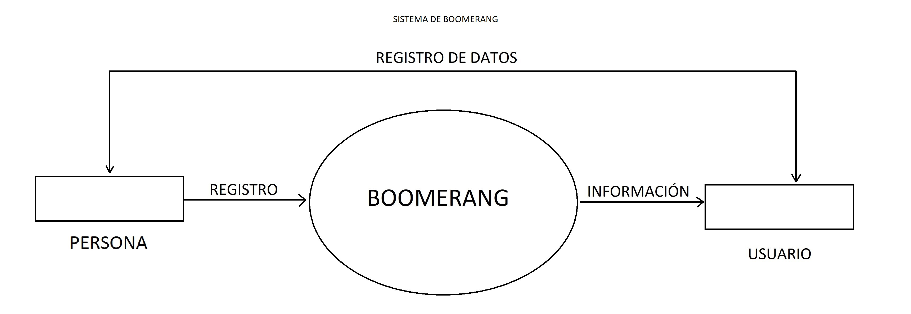
Diagrama de flujo de datos
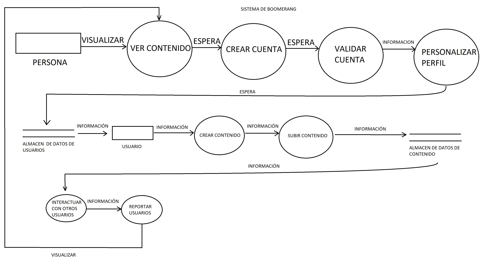
Caso de uso
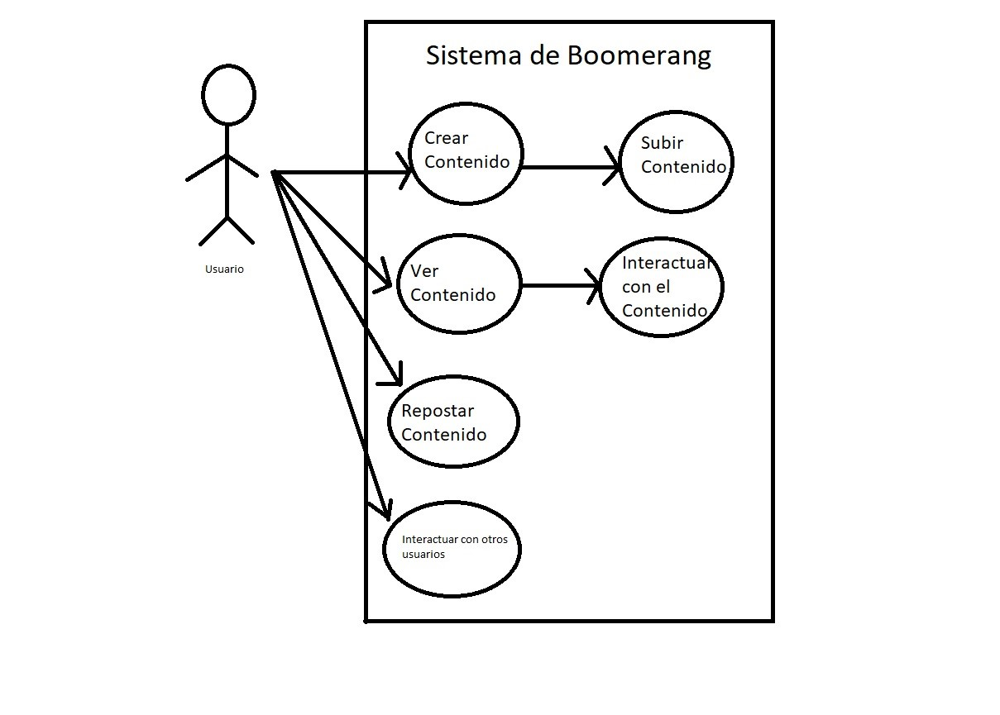
Ciclo de Vida

Utilizamos el Ciclo de vida Desarrollo Incremental ya que este se basa en hacer pruebas. El proceso de desarrollo no sigue un camino estrictamente lineal, sino que se repite en ciclos iterativos (llamados iteraciones o sprints). En cada ciclo, se construye una parte del software, se prueba, y luego se ajusta según los resultados de las pruebas.
Interfaz
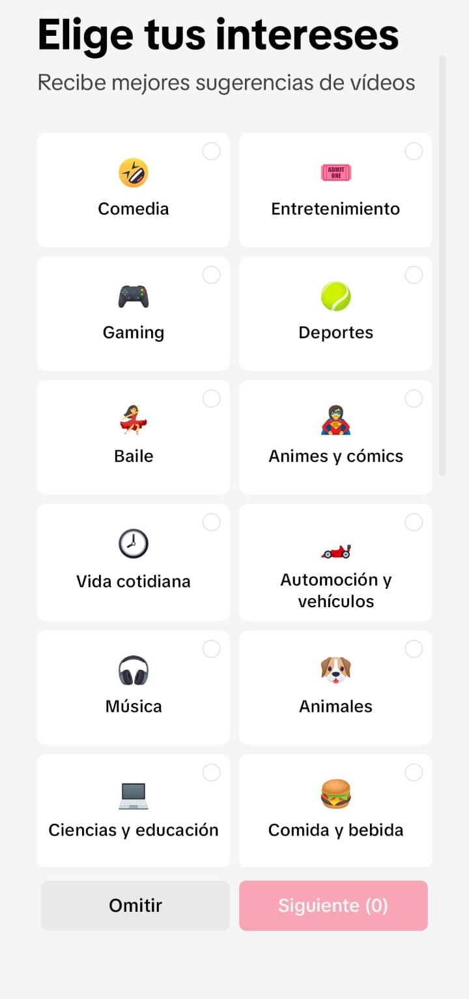
Al ingresar a la aplicación por primera vez, lo primero que vemos es una opción donde el usuario puede elegir sus categorías favoritas.
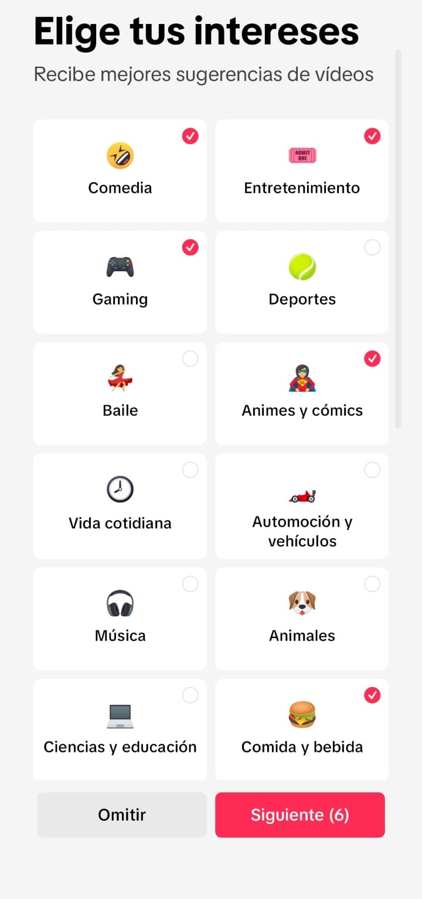
Una vez elegidas tus categorías favoritas le brindamos un contenido relacionado a sus gustos.
Una vez dentro de la plataforma, el algoritmo empieza a recomendar videos según las categorías elegidas anteriormente.
Debemos deslizar hacia arriba para seguir viendo más videos.
Aquí podemos visualizar la interfaz general que nos brinda la plataforma de BOOMERANG. En el apartado de “Para ti”. Además de diferentes herramientas para interactuar con la aplicación.
En el margen derecho podemos utilizar aquellas funciones para interactuar con el video:
PERFIL: vemos el perfil de la persona que ha subido el video, además con un signo + para seguir a la persona y estar pendiente de los videos que sube.
CORAZÓN: para indicar que el video nos ha gustado.
ICONO DE COMENTARIO: podemos comentar el video y visualizar aquellos comentarios ya existentes.
ICONO DE GUARDADO: se utiliza para guardar el video que hemos seleccionado.
COMPARTIR: podemos compartir el video con nuestros contactos/amigos o en cualquier otra red social.
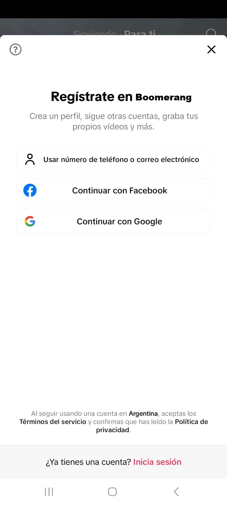
Para tener que utilizar todas las funcionalidades de la aplicación, como “Amigos”, “Bandeja de entrada” y “Perfil” debemos registrarnos en BOOMERANG, ya sea con una cuenta de correo electrónico, Google o Facebook.
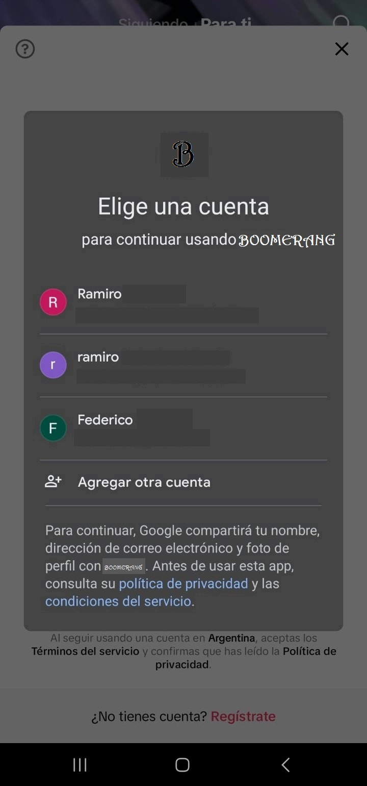
En el caso de tener una cuenta ya creada, podemos elegir nuestro correo electrónico asociado a la cuenta existente.
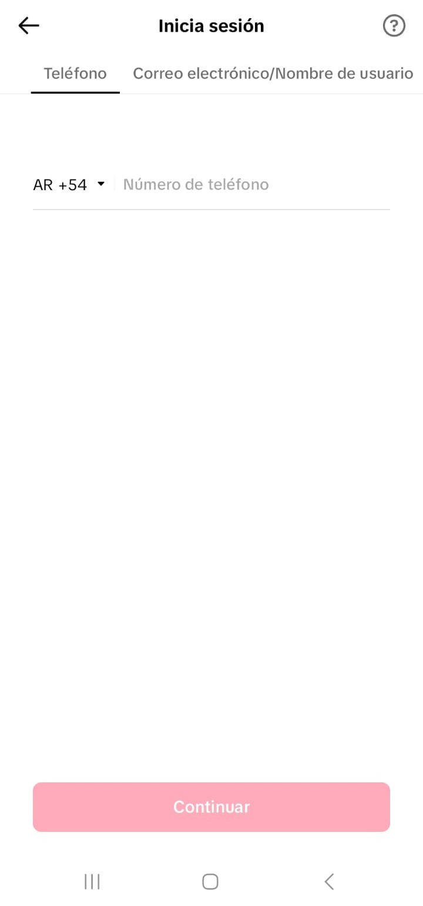
También tenemos la opción de iniciar sesión con nuestro número de teléfono.
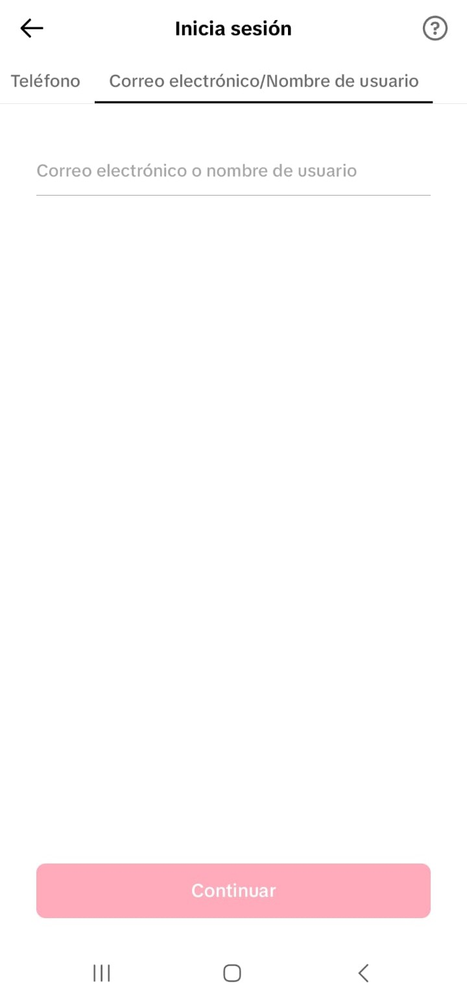
Luego de haber ingresado nuestro número telefónico, nos pide un correo electrónico/nombre de usuario para validar nuestros datos.
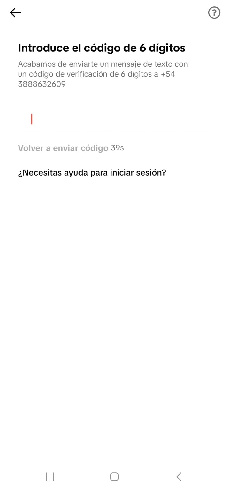
Una vez validados nuestros datos, BOOMERANG manda un código al número de teléfono ingresado, para seguir el proceso de verificación.
Una vez ya con la cuenta creada, podemos acceder al apartado de “Bandeja de entrada” para poder compartir mensajes, fotos, videos entre otros, con nuestros contactos/amigos.
En el apartado de amigos podemos ver aquellos videos que suben nuestros contactos/amigos para interactuar con ellos.
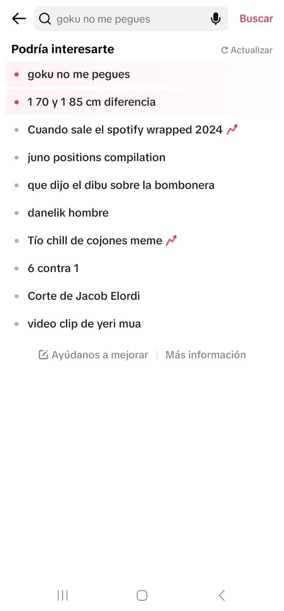
En la sección de búsqueda podemos realizar búsquedas a un contenido específico.
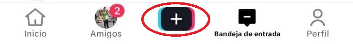
Al presionar el botón con el signo + nos lleva a lo siguiente.
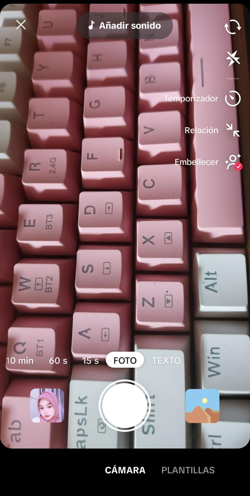
Aquí BOOMERANG nos ofrece distintos tipos de herramientas para poder personalizar nuestros videos a nuestro gusto, agregando filtros, temporizadores. seleccionar la duración del video, etc.
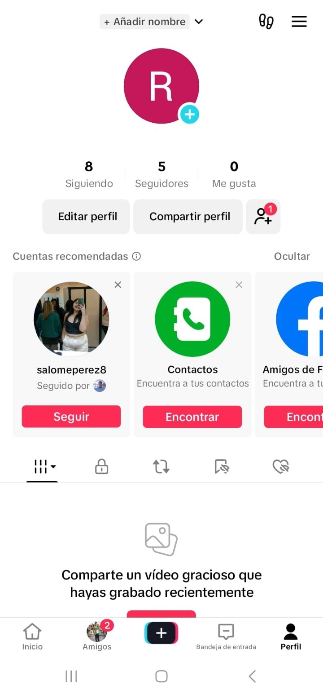
En “Perfil” podemos ver nuestros seguidores y nuestros seguidos, además podemos observar un conjunto de secciones donde la principal es el apartado de videos que hemos subido como se muestra en la imagen.
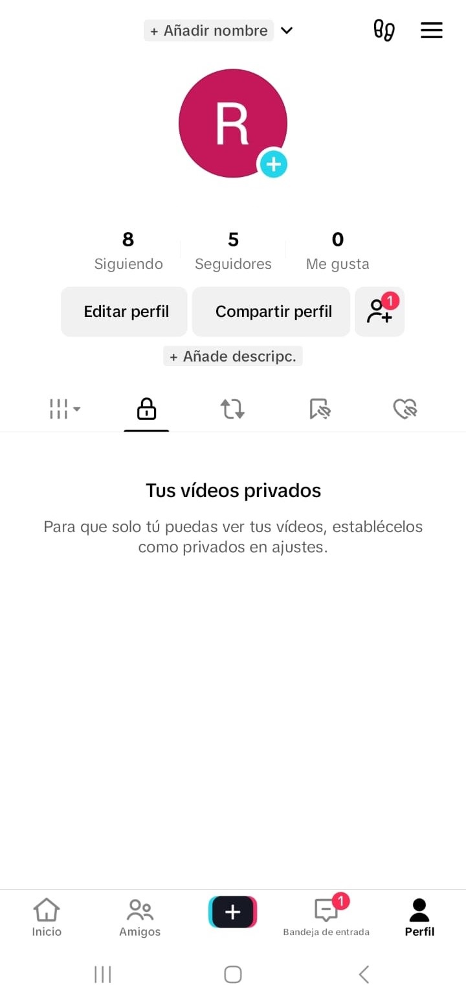
En la sección número dos podemos ver aquellos videos que hemos grabado y guardado como privado.
En la sección número tres, podemos ver aquellos videos que nos agradan y hemos compartido para que quede en nuestro perfil, y cualquier usuario pueda verlos.
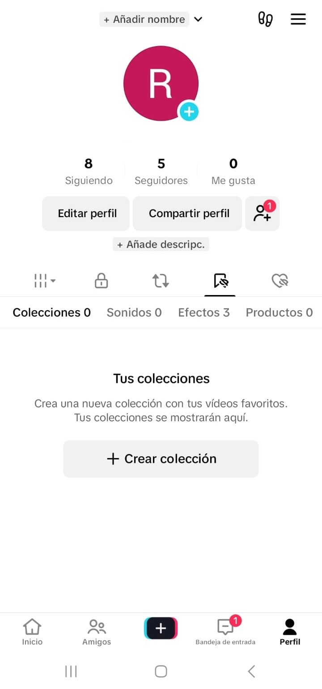
En la sección número cuatro, vemos aquellos videos que hemos guardado, donde podemos crear carpetas de diferentes categorías y guardarlo acorde al video que hemos seleccionado.
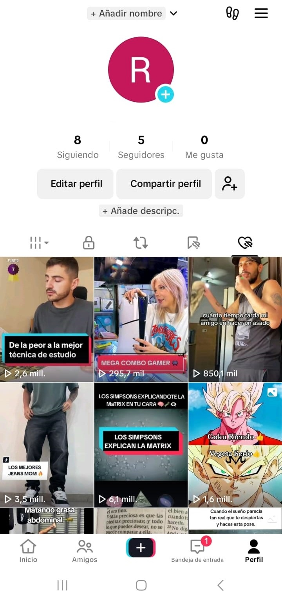
En la última sección podemos visualizar aquellos videos que nos han gustado, para poder verlos en cualquier momento.